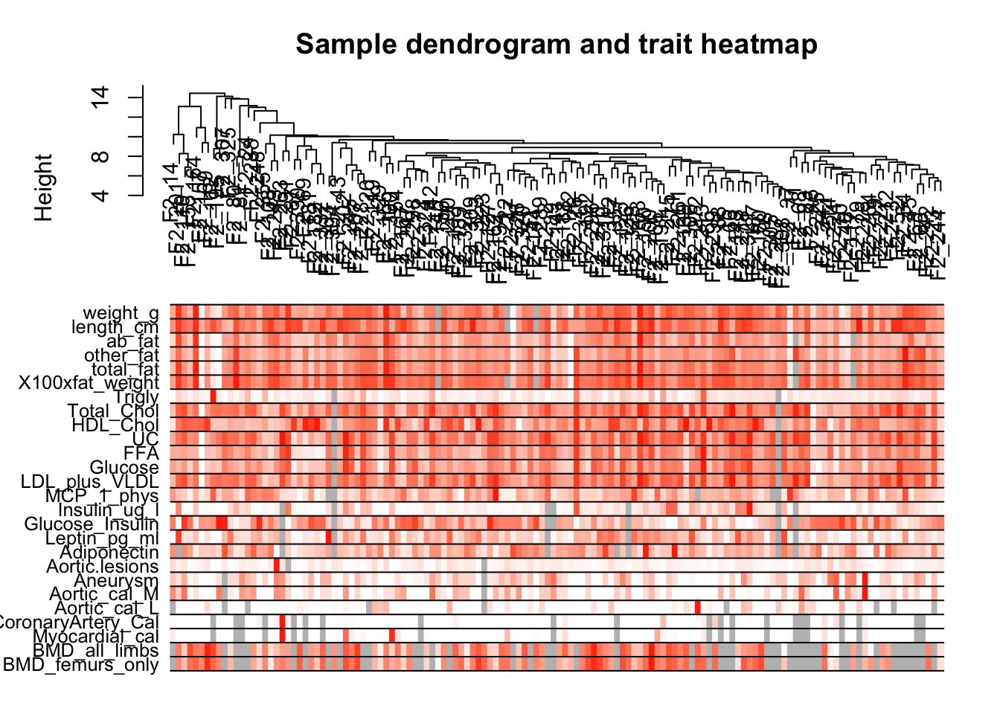

Chapter 7 多组学分析
7.1 WGCNA
使用官方例子进行学习.
https://horvath.genetics.ucla.edu/html/CoexpressionNetwork/Rpackages/WGCNA/Tutorials/
7.1.1 Data input and cleaning
- 首先读取数据
library(WGCNA)
femData <-
read.csv("/Users/shenxt/study/WGCNA_test/LiverFemale3600.csv")
dim(femData)## [1] 3600 143## [1] "substanceBXH" "gene_symbol" "LocusLinkID" "ProteomeID" "cytogeneticLoc" "CHROMOSOME"
## [7] "StartPosition" "EndPosition" "F2_2" "F2_3" "F2_14" "F2_15"
## [13] "F2_19" "F2_20" "F2_23" "F2_24" "F2_26" "F2_37"
## [19] "F2_42" "F2_43" "F2_45" "F2_46" "F2_47" "F2_48"
## [25] "F2_51" "F2_52" "F2_54" "F2_63" "F2_65" "F2_66"
## [31] "F2_68" "F2_69" "F2_70" "F2_71" "F2_72" "F2_78"
## [37] "F2_79" "F2_80" "F2_81" "F2_83" "F2_86" "F2_87"
## [43] "F2_88" "F2_89" "F2_107" "F2_108" "F2_109" "F2_110"
## [49] "F2_111" "F2_112" "F2_117" "F2_119" "F2_125" "F2_126"
## [55] "F2_127" "F2_141" "F2_142" "F2_143" "F2_144" "F2_145"
## [61] "F2_154" "F2_155" "F2_156" "F2_157" "F2_162" "F2_163"
## [67] "F2_164" "F2_165" "F2_166" "F2_167" "F2_169" "F2_180"
## [73] "F2_181" "F2_182" "F2_187" "F2_188" "F2_189" "F2_190"
## [79] "F2_191" "F2_192" "F2_194" "F2_195" "F2_200" "F2_201"
## [85] "F2_212" "F2_213" "F2_214" "F2_215" "F2_221" "F2_222"
## [91] "F2_223" "F2_224" "F2_225" "F2_226" "F2_227" "F2_228"
## [97] "F2_241" "F2_242" "F2_243" "F2_244" "F2_245" "F2_247"
## [103] "F2_248" "F2_261" "F2_263" "F2_264" "F2_270" "F2_271"
## [109] "F2_272" "F2_278" "F2_287" "F2_288" "F2_289" "F2_290"
## [115] "F2_291" "F2_296" "F2_298" "F2_299" "F2_300" "F2_302"
## [121] "F2_303" "F2_304" "F2_305" "F2_306" "F2_307" "F2_308"
## [127] "F2_309" "F2_310" "F2_311" "F2_312" "F2_320" "F2_321"
## [133] "F2_323" "F2_324" "F2_325" "F2_326" "F2_327" "F2_328"
## [139] "F2_329" "F2_330" "F2_332" "F2_355" "F2_357"可以看到该数据行是基因,列是样品.
然后将基因的描述列去掉.并且将其转置,行是样品,列是基因.
data_exp0 <- as.data.frame(t(femData[, -c(1:8)]), stringsAsFactors = FALSE)
names(data_exp0) = femData$substanceBXH
rownames(data_exp0) = names(femData)[-c(1:8)]然后需要去除掉数据(表达矩阵)中的outlier基因和样品
## Flagging genes and samples with too many missing values...
## ..step 1## [1] TRUE该函数用来检查数据中的基因是否符合要求,如果allOK为TRUE,则代表通过检查,如果不是TRUE,则需要手动去除基因和样品:
if (!gsg$allOK)
{
# Optionally, print the gene and sample names that were removed:
if (sum(!gsg$goodGenes) > 0)
printFlush(paste("Removing genes:", paste(names(data_exp0)[!gsg$goodGenes], collapse = ", ")))
if (sum(!gsg$goodSamples) > 0)
printFlush(paste("Removing samples:", paste(rownames(data_exp0)[!gsg$goodSamples], collapse = ", ")))
# Remove the offending genes and samples from the data:
data_exp0 <- data_exp0[gsg$goodSamples, gsg$goodGenes]
}现在下面对样品进行聚类,然后观察有哪些明显的outlier samples.
sampleTree <- hclust(dist(data_exp0), method = "average")
# Plot the sample tree: Open a graphic output window of size 12 by 9 inches
# The user should change the dimensions if the window is too large or too small.
sizeGrWindow(12, 9)
#pdf(file = "Plots/sampleClustering.pdf", width = 12, height = 9);
par(cex = 0.6)
par(mar = c(0, 4, 2, 0))
plot(
sampleTree,
main = "Sample clustering to detect outliers",
sub = "",
xlab = "",
cex.lab = 1.5,
cex.axis = 1.5,
cex.main = 2
)
# Plot a line to show the cut
abline(h = 15, col = "red")# Determine cluster under the line
clust = cutreeStatic(sampleTree, cutHeight = 15, minSize = 10)
table(clust)## clust
## 0 1
## 1 134可以明显的看到一个outlier sample.可以手动删除,也可以自动的办法.
# clust 1 contains the samples we want to keep.
keepSamples = (clust == 1)
datExpr = data_exp0[keepSamples,]
nGenes = ncol(datExpr)
nSamples = nrow(datExpr)datExpr就是我们最终用来进行network分析的表达数据.
下面我们需要读取clinical data.
## [1] 361 38## [1] "X" "Mice" "Number" "Mouse_ID" "Strain"
## [6] "sex" "DOB" "parents" "Western_Diet" "Sac_Date"
## [11] "weight_g" "length_cm" "ab_fat" "other_fat" "total_fat"
## [16] "comments" "X100xfat_weight" "Trigly" "Total_Chol" "HDL_Chol"
## [21] "UC" "FFA" "Glucose" "LDL_plus_VLDL" "MCP_1_phys"
## [26] "Insulin_ug_l" "Glucose_Insulin" "Leptin_pg_ml" "Adiponectin" "Aortic.lesions"
## [31] "Note" "Aneurysm" "Aortic_cal_M" "Aortic_cal_L" "CoronaryArtery_Cal"
## [36] "Myocardial_cal" "BMD_all_limbs" "BMD_femurs_only"# remove columns that hold information we do not need.
allTraits = traitData[, -c(31, 16)]
allTraits = allTraits[, c(2, 11:36)]
dim(allTraits)## [1] 361 27## [1] "Mice" "weight_g" "length_cm" "ab_fat" "other_fat"
## [6] "total_fat" "X100xfat_weight" "Trigly" "Total_Chol" "HDL_Chol"
## [11] "UC" "FFA" "Glucose" "LDL_plus_VLDL" "MCP_1_phys"
## [16] "Insulin_ug_l" "Glucose_Insulin" "Leptin_pg_ml" "Adiponectin" "Aortic.lesions"
## [21] "Aneurysm" "Aortic_cal_M" "Aortic_cal_L" "CoronaryArtery_Cal" "Myocardial_cal"
## [26] "BMD_all_limbs" "BMD_femurs_only"# Form a data frame analogous to expression data that will hold the clinical traits.
femaleSamples = rownames(datExpr)
traitRows = match(femaleSamples, allTraits$Mice)
datTraits = allTraits[traitRows, -1]
rownames(datTraits) = allTraits[traitRows, 1]
collectGarbage()这时候我们得到的datTraits就是clinicaldata,其中行为样品,列为变量.
## [1] TRUE TRUE TRUE TRUE TRUE TRUE TRUE TRUE TRUE TRUE TRUE TRUE TRUE TRUE TRUE TRUE TRUE TRUE TRUE TRUE TRUE TRUE TRUE
## [24] TRUE TRUE TRUE TRUE TRUE TRUE TRUE TRUE TRUE TRUE TRUE TRUE TRUE TRUE TRUE TRUE TRUE TRUE TRUE TRUE TRUE TRUE TRUE
## [47] TRUE TRUE TRUE TRUE TRUE TRUE TRUE TRUE TRUE TRUE TRUE TRUE TRUE TRUE TRUE TRUE TRUE TRUE TRUE TRUE TRUE TRUE TRUE
## [70] TRUE TRUE TRUE TRUE TRUE TRUE TRUE TRUE TRUE TRUE TRUE TRUE TRUE TRUE TRUE TRUE TRUE TRUE TRUE TRUE TRUE TRUE TRUE
## [93] TRUE TRUE TRUE TRUE TRUE TRUE TRUE TRUE TRUE TRUE TRUE TRUE TRUE TRUE TRUE TRUE TRUE TRUE TRUE TRUE TRUE TRUE TRUE
## [116] TRUE TRUE TRUE TRUE TRUE TRUE TRUE TRUE TRUE TRUE TRUE TRUE TRUE TRUE TRUE TRUE TRUE TRUE TRUE下面我们来看看样品的临床数据的热图和样品的基因的聚类.
# Re-cluster samples
sampleTree2 = hclust(dist(datExpr), method = "average")
# Convert traits to a color representation: white means low, red means high, grey means missing entry
traitColors = numbers2colors(datTraits, signed = FALSE)
# Plot the sample dendrogram and the colors underneath.
plotDendroAndColors(sampleTree2,
traitColors,
groupLabels = names(datTraits),
main = "Sample dendrogram and trait heatmap")
最后,把数据保存下来,准备后续的分析.
7.1.2 Network analysis of liver expression data in female mice
数据都准备好之后,下面就是做网络分析和module detection.
- 首先需要设置R运行环境,主要是要能够进行多线程处理,然后读取数据:
## Allowing parallel execution with up to 6 working processes.# Load the data saved in the first part
lnames = load(file = "/Users/shenxt/study/WGCNA_test/FemaleLiver-01-dataInput.RData")
#The variable lnames contains the names of loaded variables.
lnames## [1] "datExpr" "datTraits"- Automatic network construction and module detection
首先需要选择合适的soft-thresholding power
可以使用pickSoftThreshold()函数.一般需要选择一系列candidate powers,然后根据结果进行选择.
注意,这段代码在Rstudio中不能运行,运行出错,需要到R自带IDE或者终端中运行.
# Choose a set of soft-thresholding powers
powers = c(c(1:10), seq(from = 12, to = 20, by = 2))
# Call the network topology analysis function
sft = pickSoftThreshold(datExpr, powerVector = powers, verbose = 5)
save(sft, file = "/Users/shenxt/study/WGCNA_test/sft")load("/Users/shenxt/study/WGCNA_test/sft")
powers = c(c(1:10), seq(from = 12, to = 20, by = 2))
# Plot the results:
sizeGrWindow(9, 5)
par(mfrow = c(1, 2))
cex1 = 0.9
# Scale-free topology fit index as a function of the soft-thresholding power
plot(
sft$fitIndices[, 1],
-sign(sft$fitIndices[, 3]) * sft$fitIndices[, 2],
xlab = "Soft Threshold (power)",
ylab = "Scale Free Topology Model Fit,signed R^2",
type = "n",
main = paste("Scale independence")
)
text(
sft$fitIndices[, 1],
-sign(sft$fitIndices[, 3]) * sft$fitIndices[, 2],
labels = powers,
cex = cex1,
col = "red"
)
# this line corresponds to using an R^2 cut-off of h
abline(h = 0.90, col = "red")
# Mean connectivity as a function of the soft-thresholding power
plot(
sft$fitIndices[, 1],
sft$fitIndices[, 5],
xlab = "Soft Threshold (power)",
ylab = "Mean Connectivity",
type = "n",
main = paste("Mean connectivity")
)
text(
sft$fitIndices[, 1],
sft$fitIndices[, 5],
labels = powers,
cex = cex1,
col = "red"
)这里我们选择6.
然后使用blockwiseModules()函数就可以得到modules.
net <- blockwiseModules(
datExpr,
power = 6,
TOMType = "unsigned",
minModuleSize = 30,
reassignThreshold = 0,
mergeCutHeight = 0.25,
numericLabels = TRUE,
pamRespectsDendro = FALSE,
saveTOMs = TRUE,
saveTOMFileBase = "femaleMouseTOM",
verbose = 3
)## Calculating module eigengenes block-wise from all genes
## Flagging genes and samples with too many missing values...
## ..step 1
## Cluster size 3600 broken into 2108 1492
## Cluster size 2108 broken into 1126 982
## Done cluster 1126
## Done cluster 982
## Done cluster 2108
## Done cluster 1492
## ..Working on block 1 .
## TOM calculation: adjacency..
## ..will use 6 parallel threads.
## Fraction of slow calculations: 0.386353
## ..connectivity..
## ..matrix multiplication (system BLAS)..
## ..normalization..
## ..done.
## ..saving TOM for block 1 into file femaleMouseTOM-block.1.RData
## ....clustering..
## ....detecting modules..
## ....calculating module eigengenes..
## ....checking kME in modules..
## ..removing 1 genes from module 1 because their KME is too low.
## ..removing 1 genes from module 7 because their KME is too low.
## ..removing 1 genes from module 8 because their KME is too low.
## ..removing 1 genes from module 21 because their KME is too low.
## ..merging modules that are too close..
## mergeCloseModules: Merging modules whose distance is less than 0.25
## Calculating new MEs...在这里我们选择了soft thresholding power 6, 然后最小module size设置为30.mergeCutHeight用来控制merge module.
下面看一下分类结果.
##
## 0 1 2 3 4 5 6 7 8 9 10 11 12 13 14 15 16 17 18
## 99 609 460 409 316 312 221 211 157 123 106 100 94 91 77 76 58 47 34代表这里面有18个module.标记为0的基因代表没有归为任何一类module.
# Convert labels to colors for plotting
mergedColors = labels2colors(net$colors)
# Plot the dendrogram and the module colors underneath
plotDendroAndColors(
net$dendrograms[[1]],
mergedColors[net$blockGenes[[1]]],
"Module colors",
dendroLabels = FALSE,
hang = 0.03,
addGuide = TRUE,
guideHang = 0.05
)
然后将结果保存,用于后续的分析.
7.1.3 Relating modules to external information and identifying important
首先加载上一步产生的数据:
lnames = load(file = "/Users/shenxt/study/WGCNA_test/FemaleLiver-01-dataInput.RData");
#The variable lnames contains the names of loaded variables.
lnames## [1] "datExpr" "datTraits"# Load network data saved in the second part.
lnames = load(file = "/Users/shenxt/study/WGCNA_test/FemaleLiver-02-networkConstruction-auto.RData");
lnames## [1] "MEs" "moduleLabels" "moduleColors" "geneTree"然后我们想要找到和clinical data关系非常紧密的module.对于每个module的来说,都有一个eigengene,也就是其PCA分析的第一主成分,用来代表该module在每个样品中的含量.
# Define numbers of genes and samples
nGenes = ncol(datExpr)
nSamples = nrow(datExpr)
# Recalculate MEs with color labels
MEs0 = moduleEigengenes(datExpr, moduleColors)$eigengenes
MEs = orderMEs(MEs0)
moduleTraitCor = cor(MEs, datTraits, use = "p")
moduleTraitPvalue = corPvalueStudent(moduleTraitCor, nSamples)# Will display correlations and their p-values
textMatrix = paste(signif(moduleTraitCor, 2), "\n(",
signif(moduleTraitPvalue, 1), ")", sep = "");
dim(textMatrix) = dim(moduleTraitCor)
par(mar = c(6, 8.5, 3, 3));
# Display the correlation values within a heatmap plot
labeledHeatmap(Matrix = moduleTraitCor,
xLabels = names(datTraits),
yLabels = names(MEs),
ySymbols = names(MEs),
colorLabels = FALSE,
colors = greenWhiteRed(50),
textMatrix = textMatrix,
setStdMargins = FALSE,
cex.text = 0.5,
zlim = c(-1,1),
main = paste("Module-trait relationships"))## Warning in greenWhiteRed(50): WGCNA::greenWhiteRed: this palette is not suitable for people
## with green-red color blindness (the most common kind of color blindness).
## Consider using the function blueWhiteRed instead.Gene relationship to trait and important modules: Gene Significance and Module Membership
# Define variable weight containing the weight column of datTrait
weight = as.data.frame(datTraits$weight_g)
names(weight) = "weight"
# names (colors) of the modules
modNames = substring(names(MEs), 3)
geneModuleMembership = as.data.frame(cor(datExpr, MEs, use = "p"))
MMPvalue = as.data.frame(corPvalueStudent(as.matrix(geneModuleMembership), nSamples))
names(geneModuleMembership) = paste("MM", modNames, sep="")
names(MMPvalue) = paste("p.MM", modNames, sep="")
geneTraitSignificance = as.data.frame(cor(datExpr, weight, use = "p"))
GSPvalue = as.data.frame(corPvalueStudent(as.matrix(geneTraitSignificance), nSamples))
names(geneTraitSignificance) = paste("GS.", names(weight), sep="")
names(GSPvalue) = paste("p.GS.", names(weight), sep="")Intramodular analysis: identifying genes with high GS and MM
module = "brown"
column = match(module, modNames)
moduleGenes = moduleColors==module
par(mfrow = c(1,1))
verboseScatterplot(abs(geneModuleMembership[moduleGenes, column]),
abs(geneTraitSignificance[moduleGenes, 1]),
xlab = paste("Module Membership in", module, "module"),
ylab = "Gene significance for body weight",
main = paste("Module membership vs. gene significance\n"),
cex.main = 1.2, cex.lab = 1.2, cex.axis = 1.2, col = module)Summary output of network analysis results
## [1] "MMT00000044" "MMT00000046" "MMT00000051" "MMT00000076" "MMT00000080" "MMT00000102"## [1] "MMT00000887" "MMT00001077" "MMT00001185" "MMT00001486" "MMT00002002" "MMT00002037"## [1] 23388 34## [1] "X" "ID" "arrayname" "substanceBXH"
## [5] "gene_symbol" "LocusLinkID" "OfficialGeneSymbol" "OfficialGeneName"
## [9] "LocusLinkSymbol" "LocusLinkName" "ProteomeShortDescription" "UnigeneCluster"
## [13] "LocusLinkCode" "ProteomeID" "ProteomeCode" "SwissprotID"
## [17] "OMIMCode" "DirectedTilingPriority" "AlternateSymbols" "AlternateNames"
## [21] "SpeciesID" "cytogeneticLoc" "Organism" "clustername"
## [25] "reporterid" "probeid" "sequenceid" "clusterid"
## [29] "chromosome" "startcoordinate" "endcoordinate" "strand"
## [33] "sequence_3_to_5_prime" "sequence_5_to_3_prime"probes = names(datExpr)
probes2annot = match(probes, annot$substanceBXH)
# The following is the number or probes without annotation:
sum(is.na(probes2annot))## [1] 0# Create the starting data frame
geneInfo0 = data.frame(substanceBXH = probes,
geneSymbol = annot$gene_symbol[probes2annot],
LocusLinkID = annot$LocusLinkID[probes2annot],
moduleColor = moduleColors,
geneTraitSignificance,
GSPvalue)
# Order modules by their significance for weight
modOrder = order(-abs(cor(MEs, weight, use = "p")));
# Add module membership information in the chosen order
for (mod in 1:ncol(geneModuleMembership))
{
oldNames = names(geneInfo0)
geneInfo0 = data.frame(geneInfo0, geneModuleMembership[, modOrder[mod]],
MMPvalue[, modOrder[mod]]);
names(geneInfo0) = c(oldNames, paste("MM.", modNames[modOrder[mod]], sep=""),
paste("p.MM.", modNames[modOrder[mod]], sep=""))
}
# Order the genes in the geneInfo variable first by module color, then by geneTraitSignificance
geneOrder = order(geneInfo0$moduleColor, -abs(geneInfo0$GS.weight));
geneInfo = geneInfo0[geneOrder, ]
write.csv(geneInfo, file = "/Users/shenxt/study/WGCNA_test/geneInfo.csv")7.1.4 对module进行分析
在前文中,鉴定出了几个和weight相关的module.